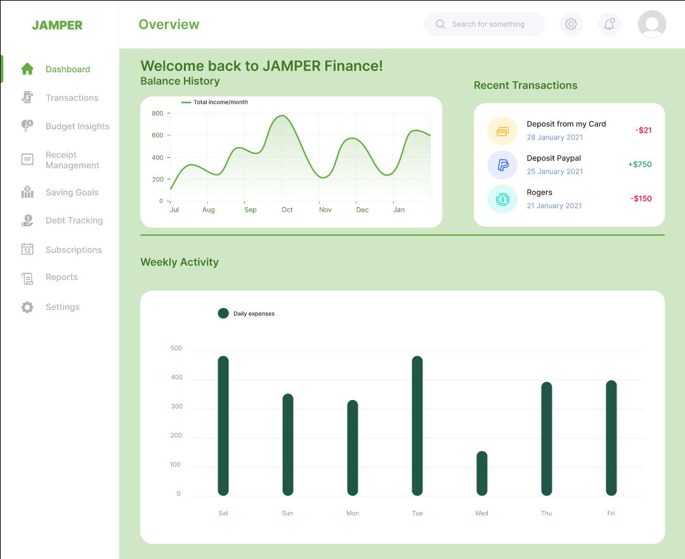

Building thoughtful digital solutions.
Hi, I'm Romer John De Lina — a University of Lethbridge Computer Science undergraduate and SAIT Software Development diploma graduate interested in building practical, user-friendly technology through design, development, and collaboration.
Selected work.
01 / Featured project
From ideas to implementation.
I'm currently pursuing a Post-Diploma Bachelor of Science in Computer Science at the University of Lethbridge, after graduating from SAIT with a diploma in Software Development. I enjoy turning requirements into clear solutions, from mapping user flows and designing interfaces to developing and testing applications.
On JAMPER Finance, I served as Lead Designer and Full-Stack Developer in a six-person team. I worked across requirements, wireframes, Figma prototypes, implementation, and testing.
Areas of experience: interface design · web development · requirements & user flows · software testing · team collaboration
View resume ↗